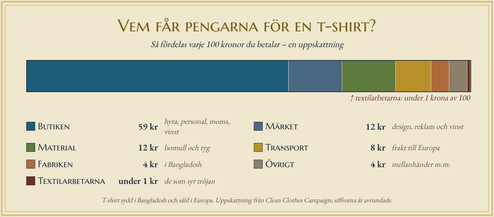

Lappen i nacken
Ta på dig din vanligaste t-shirt och vik ner kragen. Där sitter en liten lapp. På den står kanske ”Made in Bangladesh”. Tre ord, och de är sanna. Men de berättar bara en bråkdel av historien. Bomullen i tröjan kan ha vuxit i Indien. Garnet kan ha spunnits i Kina. Tyget kan ha färgats i ett tredje land. Märket på bröstet kommer från ett företag i Europa, och butiken där tröjan köptes ligger kanske några kilometer hemifrån.
En t-shirt är ett av de enklaste plagg som finns. Ändå har den ofta rest längre än de flesta människor gör under ett år. Följer man den bakåt, steg för steg, ser man nästan allt som ekonomisk geografi handlar om: råvaror, förädling, arbetskraft, transporter och marknad. Och man ser något mer – vem som tjänar pengar på resan, och vem som inte gör det.
Allt börjar på en åker
Bomull är en växt. Fröna sitter inbäddade i mjuka, vita fibrer, och det är fibrerna som blir till tyg. Världens största bomullsproducenter är Kina och Indien, och även USA, Brasilien och Pakistan odlar stora mängder.
Bomull trivs där det är varmt och soligt, men den behöver också mycket vatten. På många håll räcker inte regnet, och då bevattnas åkrarna med vatten från floder och grundvatten. Hur mycket vatten en enda t-shirt kräver är omdiskuterat. Siffran 2 700 liter citeras ofta, men andra beräkningar landar betydligt lägre beroende på var bomullen odlas och hur man räknar. Säkert är att bomullsodling är en av jordbrukets mest vattenkrävande grödor, och att den ofta sker i torra områden där vattnet behövs till annat.
Här är vi i den primära sektorn. Bonden som odlar bomullen får betalt för råvaran – men för de flesta bönder är det en liten summa, och priset styrs av en världsmarknad som de själva inte kan påverka.
Från fiber till tyg
En bal bomull är ännu långt ifrån en tröja. Först rensas fibrerna och spinns till garn. Garnet stickas sedan till tyg – en t-shirt är stickad, inte vävd, och därför är den töjbar. Därefter bleks och färgas tyget, ofta med kemikalier som kräver mycket vatten och som på många håll har förorenat floder.
Varje steg är förädling. Råvaran blir mer värd för varje gång den bearbetas. Spinnerier och färgerier kräver stora maskiner och mycket energi, och de ligger ofta i länder med stor textilindustri, som Kina och Indien, men också i Bangladesh, Pakistan och Turkiet.
Här ser man en lokaliseringsfaktor i arbete. Spinneriet behöver inte ligga där bomullen växer, för bomull är lätt att frakta. Det lönar sig i stället att ligga där det finns energi, maskiner och folk som kan sköta dem.
Sömnaden – där händerna behövs
Nu ska tyget klippas och sys. Och här finns något som maskinerna fortfarande inte klarar särskilt bra: att hantera mjukt tyg som ändrar form. En robot kan svetsa en bil, men att sy ihop ärmar på en tröja kräver fortfarande människohänder. Därför är sömnad ett av de mest arbetsintensiva stegen i hela kedjan – och därför spelar lönerna störst roll just här.
Det är förklaringen till att så mycket av världens kläder sys i Bangladesh. Landet är i dag världens näst största exportör av kläder, efter Kina. Kläder står för omkring fyra femtedelar av allt Bangladesh exporterar, och runt fyra miljoner människor arbetar i klädfabrikerna, en stor del av dem kvinnor. Enligt organisationen Clean Clothes Campaign tillverkades år 2025 omkring sex av tio bomullströjor som importerades till EU i Bangladesh.
Lönerna är låga. Sedan slutet av 2023 är minimilönen i klädindustrin 12 500 taka i månaden, motsvarande drygt tusen svenska kronor. Det var en kraftig höjning, men fackföreningarna hade krävt nästan dubbelt så mycket. Fabriksägarna å sin sida varnade för att högre löner skulle få köparna att flytta beställningarna till andra länder.
Här ser vi lokaliseringsfaktorn billig arbetskraft i sin renaste form. Och det är en hård konkurrens. Om lönerna stiger i ett land kan beställningarna flytta till ett annat – Vietnam, Kambodja eller Etiopien – där de är lägre.
Resan över haven
De färdiga tröjorna viks, packas i kartonger och lastas i containrar. Containern är kanske den viktigaste uppfinningen för världshandeln under 1900-talet. En standardiserad stållåda kan lyftas direkt från en lastbil till ett fartyg och vidare till ett tåg, utan att någon behöver packa om innehållet.
Ett stort containerfartyg kan bära tiotusentals containrar, och varje container rymmer tusentals tröjor. Därför blir frakten för en enda tröja väldigt billig, även om resan från Bangladesh till Europa tar flera veckor. Billiga transporter är just det som gör hela systemet möjligt. Om det hade varit dyrt att flytta saker runt jorden skulle kläderna i stället ha sytts nära oss. Många av containrarna till Sverige kommer in via Göteborgs hamn, den största hamnen i Norden, och fraktas sedan vidare med lastbil eller tåg till lager och butiker runt om i landet.
Vem får pengarna?
Föreställ dig att du betalar ungefär 300 kronor för en t-shirt i en butik i Europa. Vart tar pengarna vägen?
Clean Clothes Campaign har gjort en ofta citerad uppskattning av hur priset på en t-shirt som sytts i Bangladesh fördelas. Den största delen, nästan 60 procent, stannar i butiksledet: hyra för butiken, löner till personalen, moms och butikens vinst. Märket – företaget som har designat tröjan och sätter sitt namn på den – får omkring 12 procent. Material som bomull och tyg står för ungefär lika mycket. Transporterna kostar omkring 8 procent. Fabriken i Bangladesh får runt 4 procent. Och de som har sytt tröjan får mindre än en procent av priset – på en tröja för 300 kronor alltså bara ett par kronor.
Det ska sägas att siffrorna är en uppskattning, och företagen redovisar sällan exakt hur deras priser är uppbyggda. Men mönstret är tydligt, och det är inte unikt för t-shirts. Värdet i en vara skapas inte jämnt längs kedjan. Det mesta av pengarna hamnar i början med design och varumärke och i slutet med butik och försäljning – och det är oftast länder som Sverige som står för just de delarna. Det minsta hamnar i mitten, i själva tillverkningen, som sker där lönerna är lägst.
Det förklarar också något vi såg i avsnittet om näringslivets sektorer. Ett rikt land kan ha få människor i fabrikerna och ändå tjäna stora pengar på kläder – eftersom det är den tertiära och den kvartära sektorn, handeln, designen och varumärket, som tar den största delen av priset.

Rana Plaza
Den 24 april 2013 rasade byggnaden Rana Plaza utanför Dhaka, Bangladeshs huvudstad. I huset fanns fem klädfabriker. Dagen innan hade man upptäckt stora sprickor i väggarna, och butikerna och banken på bottenvåningen stängdes. Men textilarbetarna beordrades att gå till arbetet som vanligt. Över 1 100 människor omkom, och tusentals skadades.
Olyckan väckte en fråga som inte går att undvika när man följer en t-shirts resa: vem bär ansvaret för hur varor tillverkas? Fabriksägaren som ignorerade sprickorna? Myndigheterna som inte kontrollerade byggnaden? Eller också de företag i Europa och Nordamerika som köpte kläderna – och kunderna som ville ha dem billigt?
Efter katastrofen skrev hundratals klädföretag, bland dem flera svenska, under ett bindande avtal med fackföreningar om brand- och byggnadssäkerhet i Bangladeshs fabriker. Över tusen fabriker har sedan dess inspekterats och byggts om. Det visar att villkoren i en global värdekedja kan förändras – men också att det ofta krävs en katastrof innan det sker.
Vad tröjan berättar om världen
En t-shirt kostar lite. Men det beror inte på att den är enkel att göra. Det beror på att varje steg har placerats där det blir billigast: bomullen där solen och vattnet finns, spinneriet där energin och maskinerna finns, sömnaden där lönerna är lägst, och försäljningen där kunderna har pengar. Det är lokaliseringsfaktorer, utspridda över hela jordklotet och sammanbundna av containerfartyg.
Det betyder också att den som köper kläderna är en del av kedjan. Varje köp är en liten signal om vad som efterfrågas – billigt, snabbt, hållbart eller rättvist – och företagen lyssnar på de signalerna när de bestämmer var och hur nästa tröja ska tillverkas.
Nästa gång du viker ner kragen och läser lappen kan du alltså tänka på allt som inte står där. ”Made in Bangladesh” är sant. Men det skulle lika gärna kunna stå: ”Made in the world”.
Djupdykning till avsnitt 1 (Näringslivet), text A. Fördjupningsnivå.